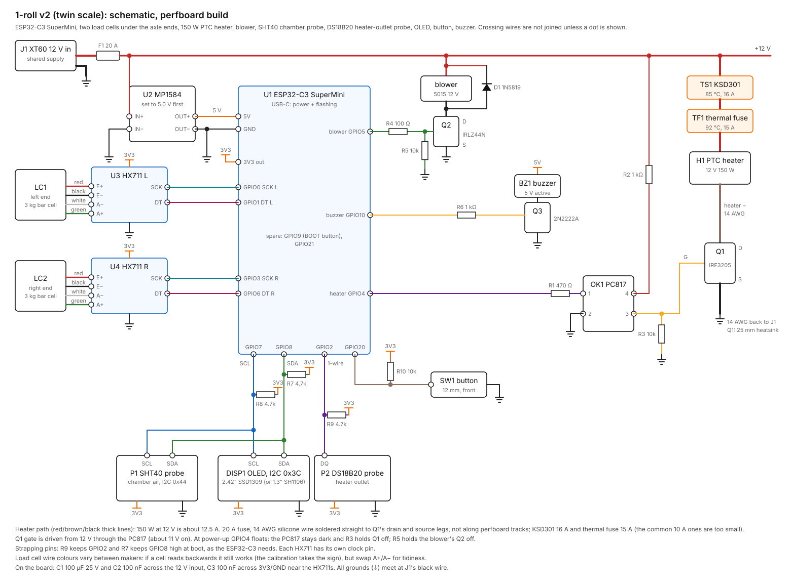
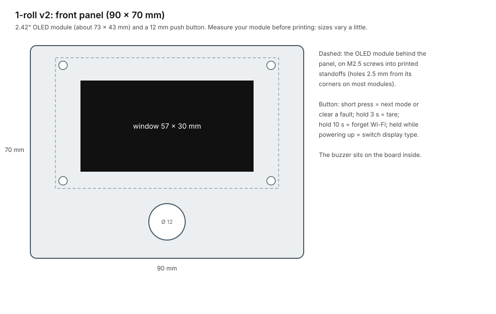

Single-Reel Dryer v2: Twin Scale
The single-reel box with its axle resting on two load cells, one under each end, so the reel weighs right wherever it sits on the axle. A 12 V 150 W PTC heater and a blower, an SHT40 probe for chamber temperature and humidity, a heater-outlet probe, and a 2.8" colour touch screen on the front. Hand-built on perfboard from through-hole parts and AliExpress modules, running the dryer firmware on an ESP32-S3 board. No filament sensor in the box: the BTT SFS goes on the printer.


What changes from the 1-roll
| 1-roll | 1-roll v2 | |
|---|---|---|
| Reel support | Bearing rollers on one load cell | Fixed 8 mm axle, its two ends on two load cells; the reel spins on hub cones with 608 bearings |
| Filament sensor | BTT SFS at the box exit | None in the box (the SFS mounts on the printer) |
| Fans | Blower + exhaust | One blower; a passive vent in the lid |
| Display and controls | 1.3" OLED (optional) and a button | 2.8" capacitive touch screen filling a 90 × 70 mm front; no button |
| Controller | JLCPCB-assembled board, ESP32-C3 | Perfboard: ESP32-S3-DevKitC-1 N16R8, HX711 and MP1584 modules, through-hole parts |
| Hottest setting | 70 °C | 65 °C, because the load cells sit in the chamber |
Two load cells
The axle is fixed and drops into a printed U-cradle on the free end of each bar load cell. The other end of each cell is screwed to a bracket on the side wall. The reel spins on two printed hub cones, each with a 608ZZ bearing, so loading stays top-down: lift the axle out, slide the reel on, drop it back in.
- Total = left + right. Each cell carries whatever share the reel's position gives it, so the sum is right wherever the reel sits, as long as each cell has its own scale factor.
- Two-point calibration.
- Tare with the empty axle and cones in place.
- Put the 500 g weight near the left end and press Left end.
- Move it near the right end and press Right end.
- Each cell has its own HX711 and clock pin. Two HX711s sharing a clock would each be clocked out of step whenever the other is read. The two sides are also reported separately, so a reel rubbing on a wall, or a dead cell, shows up as a lopsided split.
- 3 kg cells: each end carries about 0.75 kg with a full 1 kg reel, and 3 kg leaves room for a reel dropped in. The HX711s read 10 times a second, and the firmware reports a 10 s median: about ±2 g.
Heat and the scale
The cells sit in the heated chamber. Bar load cells are temperature-compensated only to about 40 °C, and their zero drifts with temperature.
- Drift: about 0.05–0.1 % of full scale per 10 °C. For 3 kg cells heating from 25 to 65 °C, that's roughly 10–25 g on the total, or 3–8 m of PLA.
- Correction: learned once. Leave a reel on, start Learn drift on the dryer's page, and run one Dry cycle. The firmware logs both cells against the chamber temperature once a minute, fits a line per cell, and from then on subtracts the drift. Expect about ±5 g after that. It needs at least 15 °C of range, and stops by itself when the Dry cycle ends.
- Chamber capped at 65 °C. The cells are usually rated to run up to about 65 °C; above that the glue under the gauges can shift the zero for good. ABS, ASA, nylon and PC dry at 65 °C, for longer.
Schematic and pins

| DevKitC pin | Goes to | Notes |
|---|---|---|
| GPIO1 / GPIO2 | HX711 left: SCK / DT | |
| GPIO38 / GPIO39 | HX711 right: SCK / DT | Each HX711 has its own clock |
| GPIO4 | Heater: R1 470 Ω → PC817 → IRF3205 gate (from 12 V) | R3 10 k holds the gate low at power-up |
| GPIO5 | Blower: R4 100 Ω → IRLZ44N gate | R5 10 k pull-down |
| GPIO6 | Buzzer through Q3 2N2222A (R6 1 k) | |
| GPIO7 | DS18B20 heater-outlet probe | R9 4.7 k pull-up |
| GPIO8 / GPIO9 | Sensor I2C SDA / SCL: SHT40 probe (0x44) | R7 / R8 4.7 k pull-ups |
| GPIO10, 11, 12, 13, 14 | Screen SPI: CS, SDI (MOSI), SCK, DC, RESET | 40 MHz; keep the wires under 20 cm |
| GPIO47 | Screen LED (backlight) | Dimmed to off after 10 min untouched |
| GPIO15, 16, 17, 18 | Touch I2C: CTP_SDA, CTP_SCL, CTP_INT, CTP_RST | Its own bus: the FT6336 is at 0x38, like an AHT20 |
| GPIO21, 40, 41, 42 | Spare | GPIO0, 3, 45, 46 are strapping pins and 35–37 belong to the PSRAM: none are used |
The 150 W heater draws about 12.5 A. The heater path never runs along perfboard tracks:
- 14 AWG silicone wire from the XT60 through the 20 A fuse, the KSD301 (16 A) and the thermal fuse (15 A) to the heater.
- The heater's return soldered straight to Q1's drain leg, and Q1's source leg straight back to the XT60.
- Q1 on a 25 mm heatsink: it gives off about 2 W.
Perfboard

Front panel and touch screen

A 2.8" 320 × 240 IPS screen with capacitive touch (ILI9341 + FT6336): glass, like a phone, with no touch calibration. It sits in the cool electronics bay, not the chamber.
| Screen | Shows and does |
|---|---|
| Home |
|
| Material | Pick the material for Dry or Print; each button shows its temperature (capped at 65 °C) and drying time |
| Settings |
|
| Scale |
|
The backlight goes off after 10 minutes untouched. The first touch only wakes it, so a stray tap can't change anything, and a fault wakes it too. Every action clicks the buzzer.
Firmware
The same firmware as the 1-roll (firmware/), built as dryer-1roll-v2. It keeps the modes (Dry per material, Keep dry, Print, Off), the PID, the safety cut-outs, the Wi-Fi setup hotspot, the status page, the REST and WebSocket API for the Printer Control Center, and updates over Wi-Fi. For v2 it adds:
- ESP32-S3 build for the DevKitC-1 N16R8: 16 MB flash, 8 MB PSRAM.
- Touch UI in its own task, made with LVGL. Like the web API, it only reads the dryer's state and sends commands, so a slow redraw can't hold up the heater control.
- Two-cell scale:
POST /api/calibrate {"grams":500,"step":"left"|"right"|"middle"}POST /api/scale/learn {"start":true|false}for the driftscale.cells(left and right grams) andscale.driftin/api/state
- 65 °C cap on every setpoint.
POST /api/config {"touch_flip":0-3}mirrors the touch x and/or y, the same as the Flip touch button.
The screens can be checked on a PC without the hardware: sh firmware/tools/ui_sim/run.sh renders each one to a PNG.
Flash dryer-1roll-v2-full.bin at 0x0 the first time; after that, upload dryer-1roll-v2.bin at /update.
Parts
All from AliExpress, through-hole where there's a choice. About US$157 per box, housing filament, a crimp kit and the "buy 2" spares included. Also available as bom.csv.
Control electronics (≈ US$22)
| Part | Qty | AliExpress search | ≈ US$ | Why this one |
|---|---|---|---|---|
| Controller: ESP32-S3-DevKitC-1 N16R8 | 1 (buy 2) | ESP32-S3 DevKitC-1 N16R8 | 7 | 16 MB flash and 8 MB PSRAM for the touch UI, two cores, about 25 free pins, USB-C. Get the N16R8 (not N8): the firmware is built for it |
| Load cell amplifiers: HX711 module | 2 (buy 3) | HX711 load cell amplifier module | 1.5 | One per cell, each on its own clock pin |
| 12 V to 5 V buck: MP1584EN module | 1 (buy 3) | MP1584EN mini buck module | 0.6 | Set to 5.0 V before the DevKitC goes in |
| Touch screen: 2.8" IPS 320x240, ILI9341 SPI, FT6336 capacitive touch | 1 | 2.8 inch IPS capacitive touch SPI ILI9341 FT6336 | 12 | Glass, works like a phone, no calibration. Make sure the listing says capacitive (CTP / FT6336U), not resistive (XPT2046). About 86 x 50 mm |
| Buzzer: 5 V active 12 mm | 1 (pack) | 5V active buzzer 12mm | 0.5 | Touch clicks, dry done, faults |
Switching (through-hole) (≈ US$6)
| Part | Qty | AliExpress search | ≈ US$ | Why this one |
|---|---|---|---|---|
| Heater MOSFET Q1: IRF3205 TO-220 | 1 (pack of 10) | IRF3205 TO-220 | 2 | About 2 W at 12.5 A with the 12 V gate drive |
| Heatsink for Q1: TO-220 25 x 23 x 16 mm | 1 (pack) | TO-220 heatsink 25x23x16mm | 1 | Keeps Q1 about 20 °C above the bay |
| Gate optocoupler OK1: PC817 DIP-4 | 1 (pack) | PC817 DIP-4 | 0.5 | Drives Q1's gate from 12 V |
| Blower MOSFET Q2: IRLZ44N TO-220 | 1 (pack of 10) | IRLZ44N TO-220 | 2 | Logic-level: fully on from 3.3 V |
| Buzzer transistor Q3: 2N2222A TO-92 | 1 (pack) | 2N2222A TO-92 | 0.5 | |
| Flyback diode D1: 1N5819 | 1 (pack) | 1N5819 DO-41 | 0.5 | Across the blower |
Board and passives (≈ US$18)
| Part | Qty | AliExpress search | ≈ US$ | Why this one |
|---|---|---|---|---|
| Resistors, 1/4 W (100 R, 470 R, 1 k, 4.7 k, 10 k) | 1 kit | 1/4W metal film resistor kit | 2.5 | R1 470 R, R2 1 k, R3 10 k, R4 100 R, R5 10 k, R6 1 k, R7-R9 4.7 k |
| Capacitors: 100 uF 25 V electrolytic, 100 nF ceramic | 1 kit each | electrolytic capacitor kit + 100nF ceramic capacitor | 2 | C1 100 uF + C2 100 nF on 12 V in, C3 100 nF on 3V3 |
| Board: double-sided prototype board 9 x 15 cm | 1 (pack of 5) | 9x15cm double sided prototype PCB | 3 | FR4 copes with the warm bay; the DevKitC is about 70 mm long |
| Female header strips 2.54 mm | 1 pack | 2.54mm female header 40 pin | 1 | Sockets for the DevKitC, HX711s and MP1584 |
| Screen wires: 20 cm female-female Dupont jumpers | 1 pack of 40 | dupont jumper wire female female 20cm | 1 | 14 wires from J9 to the screen; keep them under 20 cm |
| 12 V input screw terminal 5.08 mm 2-pin | 1 (pack) | KF128 5.08mm 2 pin screw terminal | 0.5 | Board power only: the heater current doesn't pass through it |
| JST-XH 2.54 kit with crimper | 1 | JST XH 2.54 connector kit crimper | 8 | Unpluggable cells, probes and blower |
Sensors (≈ US$18)
| Part | Qty | AliExpress search | ≈ US$ | Why this one |
|---|---|---|---|---|
| Load cells: 3 kg straight bar | 2 (buy 3) | 3kg load cell straight bar | 5 | One under each axle end; each carries about 0.75 kg, 3 kg leaves room for dropping a reel in |
| Chamber probe: SHT40 in a sintered metal housing on a cable | 1 | SHT40 probe sintered stainless I2C | 7 | Accurate at low RH, rated to 125 °C (an SHT31 probe also works) |
| Heater-outlet probe: DS18B20 waterproof 1 m | 1 | DS18B20 waterproof probe 1m | 1 | Catches a stalled blower before the KSD301 does |
| Calibration weight 500 g | 1 | calibration weight 500g | 5 | For the two-point scale calibration |
Heating and air (≈ US$20)
| Part | Qty | AliExpress search | ≈ US$ | Why this one |
|---|---|---|---|---|
| PTC air heater 12 V 150 W | 1 (buy 2) | PTC heater 12V 150W insulated aluminium | 10 | The same heater as the 1-roll and 2-roll boxes; the PID limits it |
| Blower: 5015 12 V dual ball bearing | 1 (buy 2) | 5015 blower 12V dual ball bearing | 7 | Ball bearings outlast sleeve bearings in the heat |
| KSD301 85 °C normally closed 16 A | 2 | KSD301 85 normally closed 16A | 1.5 | Hardware cut-out, resets as it cools; 16 A for the 12.5 A heater |
| Thermal fuse 92 °C 15 A | 10-pack | thermal fuse 92C 15A | 1.5 | One-shot last resort |
Power and wiring (≈ US$14)
| Part | Qty | AliExpress search | ≈ US$ | Why this one |
|---|---|---|---|---|
| XT60 male + female pair | 1 | XT60 male female pair | 0.5 | From the shared 12 V supply |
| Inline ATO fuse holder (14 AWG) + 20 A fuses | 1 | inline ATO blade fuse holder 14AWG 20A | 2 | F1 on the + lead |
| Heater-path wire 14 AWG silicone | 2 m red + 2 m black | 14AWG silicone wire | 4 | About 12.5 A: supply in, heater, Q1 |
| Signal wire 22 AWG silicone | set | 22AWG silicone wire 6 colours | 5 | Cells, probes, blower |
| Heat-shrink | set | heat shrink tube kit | 3 |
Scale mechanics (≈ US$8)
| Part | Qty | AliExpress search | ≈ US$ | Why this one |
|---|---|---|---|---|
| Axle: 8 mm linear shaft 250 mm | 1 | 8mm linear shaft 250mm | 3 | Rests in a printed U-cradle on each load cell's free end |
| 608ZZ bearings | 2 (pack of 10) | 608ZZ bearing | 3 | One in each printed hub cone, so the reel spins on the fixed axle |
| Load-cell screws (match the cells: M4 or M5) | 1 set | M4 M5 stainless screw kit | 2 | Two to fix each cell to its wall bracket, two for the cradle |
Housing (≈ US$50)
| Part | Qty | AliExpress search | ≈ US$ | Why this one |
|---|---|---|---|---|
| Lid gasket | 3 m | silicone D seal strip self adhesive | 4 | Stays soft at 70 °C |
| Lid latches | 2 | mini stainless toggle latch | 4 | |
| Insulation | 0.5 m2 | NBR rubber foam aluminium foil self adhesive 6mm | 8 | Rated to about 105 °C |
| Desiccant | 500 g | orange indicating silica gel | 5 | Changes colour when spent |
| Filament exit | 2 + 2 m | PC4-M10 coupler + PTFE tube 2x4mm | 5 | Box to printer |
| Heat-set inserts and screws | 1 set | M3 heat set insert + M3 stainless screw kit | 8 | |
| Housing filament | ~1 kg | ABS or ASA filament | 16 | Not PLA: the chamber runs at up to 65 °C |
Build and test
- Buck first: power the bare board from 12 V and set the MP1584 to 5.0 V before fitting the DevKitC.
- Flash and check the screen: flash
dryer-1roll-v2-full.binover either USB-C port. The home screen should appear within a few seconds. If touches land in the wrong place, press Flip touch under Settings until they don't (or sendtouch_flipover the API). - Heater disconnected: join the
FilamentDryer-XXXXhotspot and set up Wi-Fi. Check the chamber and outlet probes read sensibly. Select Dry and measure Q1's gate: about 11 V while on, 0 V at power-up. - Scale:
- Tare the empty axle, then calibrate left end and right end with the 500 g weight.
- Check a known reel reads the same at both ends of the axle.
- Safety parts: check the KSD301 opens with a hot-air gun before fitting it.
- First heat, attended: connect the heater and run a PLA Dry with the lid open, then closed.
- Drift: start Learn drift with a reel on, and run one ABS Dry cycle (65 °C).